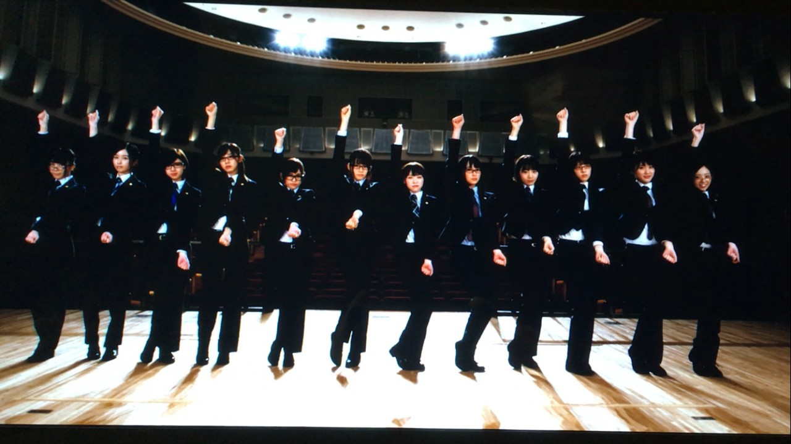

| 2017/04 19 Wed | 斎藤ちはる ついに明日から |
ちはるーむへようこそ
今日のちはるーむでは、明日からのアンダーライブのために、それぞれのサイリウムカラーを確認し合いました。
今日は地図の日。(最初の一歩の日)
今日は伊能忠敬が蝦夷地の測量のために
出発した日です。
なので地図の日、最初の一歩の日と呼ばれているのです！
伊能忠敬懐かしい...
昔習った事も今日まで繋がっていると思うとロマンを感じますね
今日は髪の毛を外ハネにしてみました！
①外ハネ
ロングだとなかなか出来ない髪型だから
新鮮でなんか嬉しい☺︎
そして明日からのライブの髪型を
とっても迷っています...！
今日みたいな①外ハネにするか、
②ボリューム有りのぐりんぐりんに巻くか、
③ボリュームは少なめで巻くか。
②ぐりんぐりん巻き
③少なめ巻き
皆さんは①②③どれが好みですか〜？
参考にしたいと思います( ¨̮ )
教えてくださいなっ
------------------------------------------------♡
♬ ChihaMusic
「ブランコ」乃木坂46
前回のアンダーライブの
メインの曲。
この時よりも人数は減ったけど
アンダーの勢いは増すばかりだなって
思ってもらえるようなライブにしたい。
"前へ後ろへ
僕らはただ空を泳いだ"
綺麗な光景が目に浮かぶ。
高台にある公園のブランコを
夕焼け空の下漕いでいる。
かっこいいよね〜
切ないのもいい。
ついに明日からです...！！
私のサイリウムカラーは「赤と青」で
曲中のコールは「ちはる」です。
皆さん宜しければお願い致しますm(_ _)m
明日、明後日は当日券も
販売されるみたいなので、
急遽来れるよ！って方もお待ちしています！！
お友達連れて是非是非きてください！！

12人の気持ちが、伝わりますように。
おやすみ
斎藤ちはる